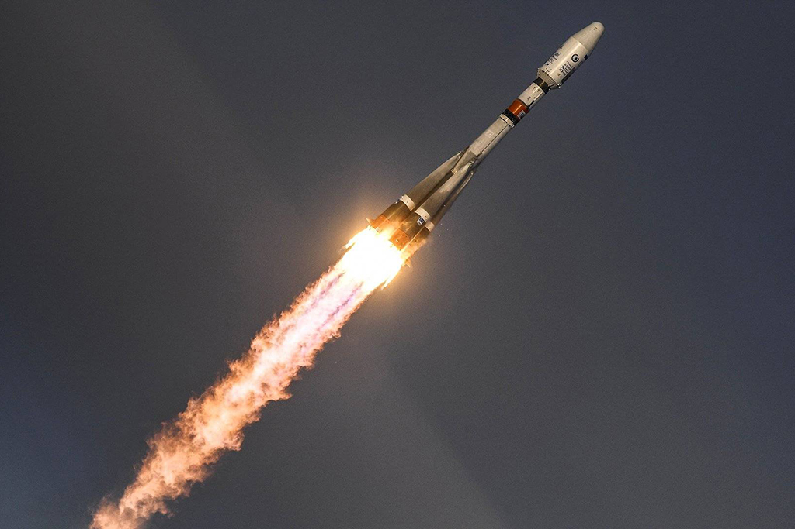
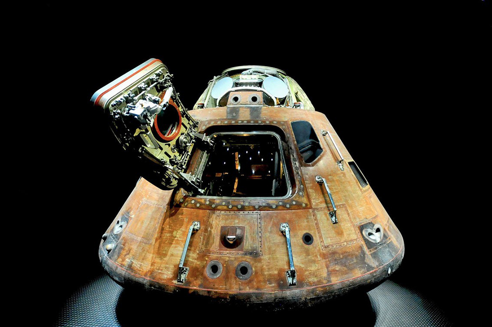
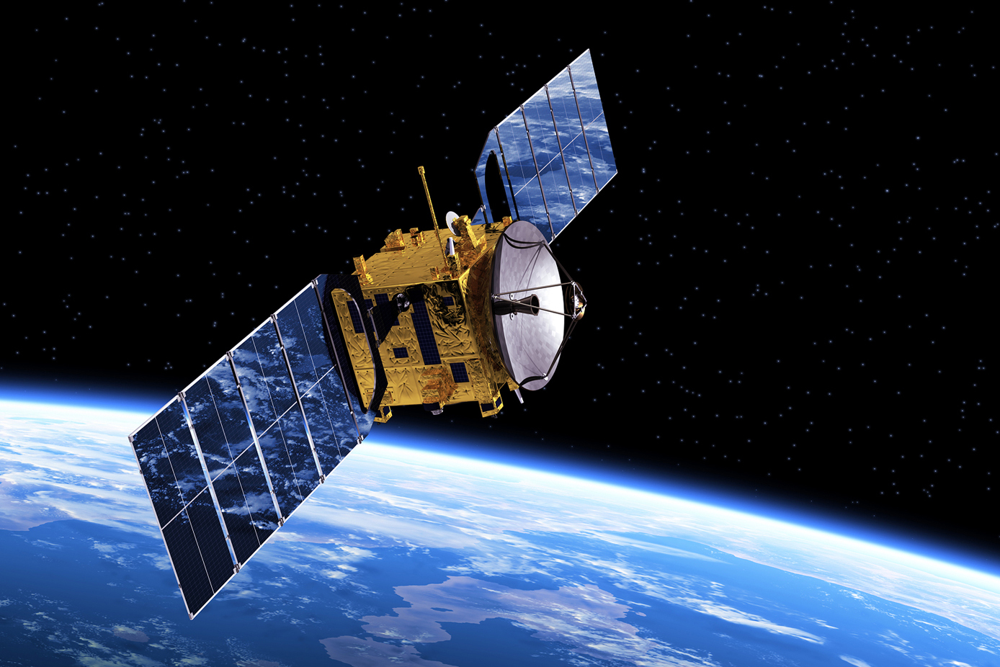
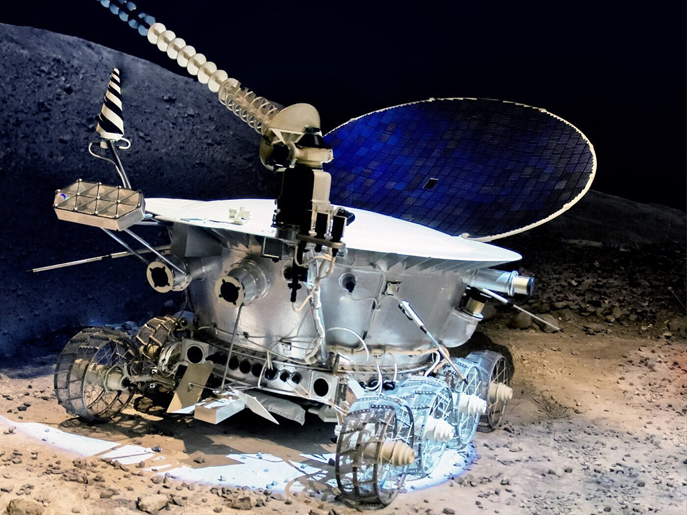

Освоение космоса
Астрономия древности
Древний Вавилон
Вавилон достиг вершины величия в 1792 – 1750 гг. до н.э.
Вавилоняне:
- умели рассчитывать движение Солнца, Луны и известных в ту пору планет;
- придумали деление неба на 12 зодиакальных созвездий;
- научились предсказывать затмения;
- установили продолжительность лунных фаз.
Древняя Греция
Примерно в 600г.до н. э. в Древней Греции учёные сделали ряд открытий:
- они выяснили, что Земля имеет шарообразную форму и вращается вокруг своей оси, вычислив её примерные размеры;
- они высчитали расстояние до Солнца и Луны.
Древний Египет
Египтяне в третьем тысячелетии до нашей эры сумели:
- создать календарь, основанный на солнечных циклах, связанный с разливом Нила и восходом звезды Сириус;
- использовать наблюдения звёзд для навигации.
Настоящее время
В наше время дли изучения космоса используется множество различных приспособлений.
Телескопы – позволяют наблюдать за дальними объектами. Есть разные виды телескопов:
- Стандартные телескопы, в которые смотрят люди с Земли.
- Космические телескопы – позволяют получать качественные изображения из космоса и отправляющие их на Землю.
- Радиотелескопы – регистрируют радиоволны космических объектов.


Виды космических аппаратов
- Ракеты-носители – запускающие в космос пилотируемые корабли, спутники, самоходные устройства или зонды.
- Спутники – устройства, находящиеся на орбите какого-нибудь небесного тела, способные передавать информацию в виде электромагнитных волн. Спутники используются для космических исследований и для земных целей. Например, спутники могут быть как космическими телескопами, станциями и зондами, так и использоваться для навигации, связи и метеорологических наблюдений.
- Спускаемые аппараты – предназначены для спуска людей или аппаратуры на поверхность космического объекта.
- Самоходные аппараты – способны передвигаться по поверхности космического объекта и отправлять информацию на Землю.




Мы активно используем изобретения, не подозревая, что они были разработаны для космонавтов, среди них штрихкоды, джойстики, плазменные телевизоры и др.